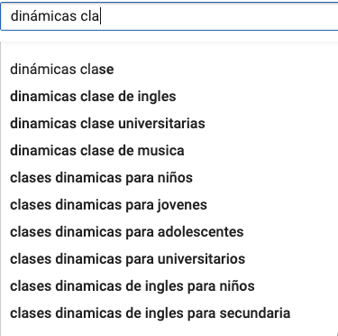
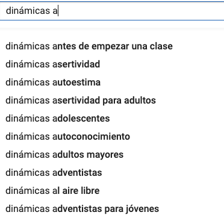
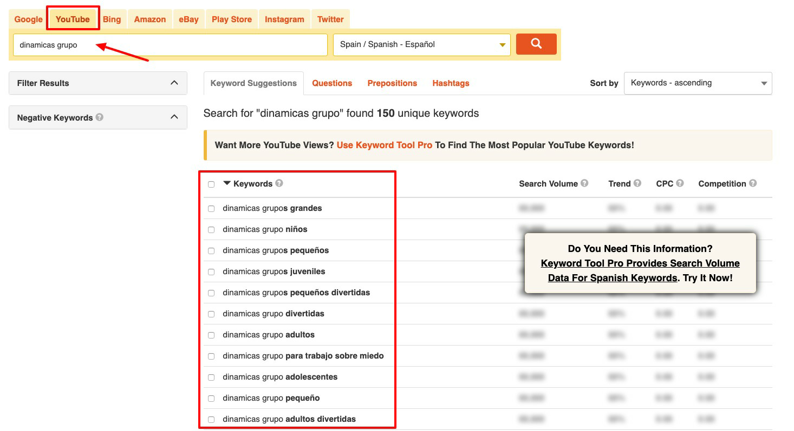
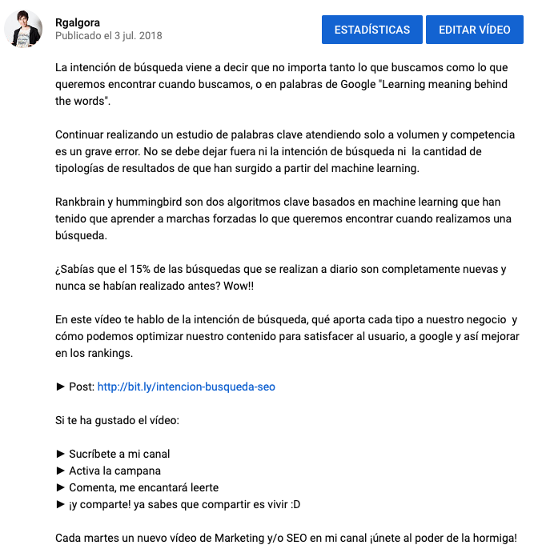
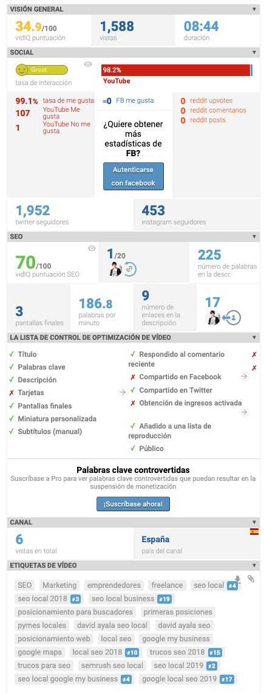
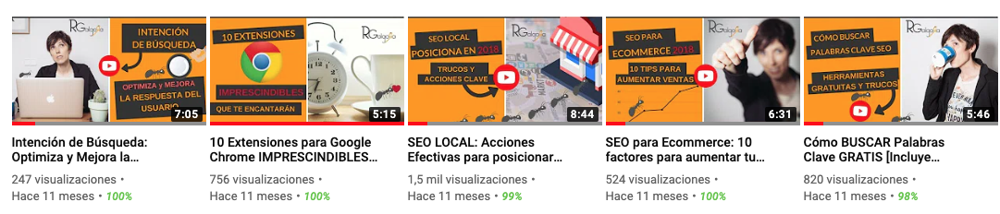

Factores SEO:
Título: cuánto más a la izquierda/inicio mejor
Debe responder a las preguntas:
- ¿De qué trata?
- ¿Aparece alguien / algo famoso / relevante?
- ¿Se puede etiquetar? (Challenge, reacción…)
- Sembrar la duda!!
Normas de oro:
- 60 caracteres máximo para que no se corte
- a veces el corte es nuestro aliado para crear la duda
- No sobreoptimices la palabra clave (la utilices repetidas veces)
- Lo más importante al principio: poner la keyword a la izquierda no es un mito falso del SEO.
- Utiliza números o corchetes cuando sea posible, aumenta el CTR (número de clicks según impresiones conseguidas)
Antes de escribir el título, analiza cómo lo hace la competencia (si es que existen vídeos para analizar)
Conoce las búsquedas más populares :
Youtube suggest: escribe la palabra clave en el buscador de youtube y mira qué resultados se despliegan

TRUCO: para ampliar el listado de búsquedas relacionadas, ve probando con la palabra clave y las letras del abecedario, ya verás como la lista se va ampliando.

Keywordtool.io: tiene pestaña para búsqueda de palabras clave en youtube

Para conocer el volumen de búsqueda tienes que aplicar el mismo método que te he enseñado antes para conocer el volumen de las keywords para google. El Planificador de palabras clave va a ser un gran aliado.
Otros factores para generar los títulos de los vídeos:
- Usa a tu favor elementos como: mayúsculas, emojis, iconos.. Úsalos mientras puedas, que no penalizan, y siempre y cuando encaje con tu público objetivo y el contenido que muestras.
- emojis: si utilizas Google Chrome, añade esta extensión y así tendrás los emojis siempre a mano https://chrome.google.com/webstore/detail/emoji-keyboard-emojis-for/fbcgkphadgmbalmlklhbdagcicajenei?hl=es
- ¡Ojo!: a la hora de confeccionar los títulos hay que tener claro quién es el público objetivo, esto es, a quién te diriges con tus vídeos.
Por ejemplo, no tiene sentido poner iconos, exclamaciones, emojis, etc. en un vídeo de una entrevista con un médico
Se pueden crear titulares generando duda. Por ejemplo:
Con esta dinámica de grupo consigues que el 80%.… - no hay que abusar, pero es una estrategia que se puede utilizar.
Descripción
- Palabra clave al inicio.
- Debe ser única. Aunque los enlaces a tus RRSS dentro de la descripción pueden ser iguales, varía el resto del contenido
- La extensión máxima es de 5000 caracteres para la descripción completa. Asegúrate de que el extracto se lee correctamente, incluye la palabra clave y es atractivo para que el usuario quiera seguir leyendo o viendo el vídeo.
- Extensión: una descripción corta puede posicionar, pero siempre que puedas aprovéchala mejor para reforzar las keywords (sin caer en la sobreoptimización. Cuando la leas tiene que ser natural)
- Si el vídeo es muy largo, siempre que puedas divídelo en minutajes:
- ejemplo: vídeo de dinámicas de grupo. En descripción poner:
- 2’32 introducción a las dinámicas
- 3’22 crear grupos para las dinámicas
- 5’15 listado de dinámicas para primaria
- ejemplo: vídeo de dinámicas de grupo. En descripción poner:
Esta práctica mejora la usabilidad con el usuario
- ¡hashtags! #Keyword . Convierte la palabra o palabras clave en un hashtag. Prácticamente nadie lo hace y funciona
- por ejemplo: Utiliza #dinámicas de #grupo en clases de #secundaria
Palabras a utilizar en la descripción de manera natural: utiliza palabras principales, sinónimos, semánticas relacionadas…
Ejemplo de descripción:

Etiquetas
- Variedad: no pasa nada por ser un poco repetitivo, pero tampoco abuses de ellas - utiliza palabras con las que tú explicarías a tu amigo de qué trata el video.
- Ortografía: el usuario no ve estas etiquetas, por lo que si detectas que hay búsquedas con errores ortográficos que se repiten, puedes escribir etiquetas con errores para captar estas búsquedas.
- Truco: Usa palabras clave de la competencia. Fíjate en los videos que mejor posicionan para la palabra clave que quieres y amplía tus etiquetas con las suyas. Utiliza también nombres de canales de competidores (observación propia)
Tarea 1: crea un listado con vídeos de la competencia y analiza qué títulos utilizan, descripciones, cuál es su duración, si las personas comentan o no… la información de la competencia nos debe servir de “inspiración” para nuestros propios vídeos.
Tarea 2: añade la extensión de VIDIQ, está tanto para chrome como para firefox. Su sitio web es https://vidiq.com/
Esta herramienta es gratuita, y entre otras muchas posibilidades, permite analizar los vídeos de la competencia y descubrir qué etiquetas utilizan.
Algunos datos que vas a poder ver de cualquier vídeo y no solo de los tuyos con VidIQ

Si te gustan las herramientas, te dejo otra que también ofrece muchas funcionalidades para youtube. En este caso, es para Chrome: https://www.tubebuddy.com/
Miniaturas
No es un factor directo de posicionamiento SEO, aunque la creación y elección de una buena miniatura aumenta el porcentaje de click.
Además, permite dar coherencia visual a tu canal.
A grandes rasgos, las miniaturas que mejor funcionan:
- las imágenes luminosas y de alto contraste destacan más
- los planos cercanos de rostros captan la atención
- sigue siempre una identidad visual distintiva

Duración
Hace años, youtube daba mucha importancia al número de visitas; hoy en día el foco está puesto en la retención de cada visita, esto es:
- el tiempo de permanencia individual, en cada vídeo
- reconocimiento de tiempo de permanencia, es decir, la acumulación de minutos visionados o tiempo que pasa en tu canal
“La cantidad de tiempo total que pasa una persona en YouTube durante una sola visita se denomina "sesión de visualización". Si uno de los vídeos del canal de tu marca consigue que los espectadores sigan viendo vídeos, el canal obtendrá reconocimiento de tiempo de visualización por los minutos acumulados que hayas conseguido.”, Youtube.
Conociendo esta información, ¿qué duración tiene que tener el vídeo?
No hay una respuesta definitiva. En este caso hay que observar y probar.
- Observar: analiza la duración de los vídeos de la competencia que están bien posicionados y que tratan sobre la temática que tú quieres abordar.
- Probar: prueba con diferentes duraciones y saca una conclusión. Si retienes al espectador, hazlo largo. Si no, corto
- ten en cuenta la palabra clave que estás atacando, ya que unas darán más juego que otras.
Si tienes redes sociales, ten en cuenta que los vídeos cortos funcionan muy bien en estas plataformas.
- Práctica adecuada: crear vídeos más cortos y montar una playlist o lista de reproducción con una palabra clave principal. Las playlist posicionan muy bien y no tienen que estar creadas exclusivamente con tus vídeos, sino que puedes incluir vídeos de terceros.
Subtítulos
Prácticamente nadie utiliza la funcionalidad de traducir los vídeos y sin embargo, youtube lo tiene en cuenta.
Tienes dos opciones:
Opción 1: activar subtítulos por la comunidad
Opción 2: hacer tú los subtítulos. En esta opción, puedes incluir palabras clave.
“Los subtítulos pueden aportar más información sobre tu vídeo a los sistemas de visibilidad de YouTube.”
EXTRA 1: lectura obligatoria. Aunque es de 2017, en general los datos reflejan la realidad de 2019. http://backlinko.com/youtube-ranking-factors
EXTRA 2: Conoce la página secreta de youtube: https://www.youtube.com/testtube

Posicionamiento SEO por Rocío García Algora bajo licencia Creative Commons Reconocimiento-NoComercial-CompartirIgual 4.0 Internacional License.